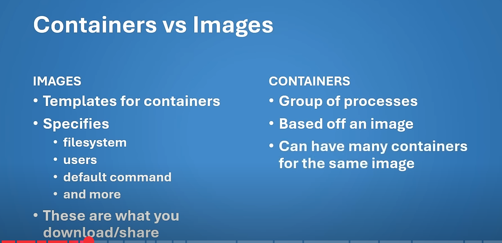

05
notable difference in nodeJS. Uses the global object instead of window, which
has only some of the same methods as window, AND
nodeJs is missing some of the apis like Fetch, but we can always pull packages and modules
into node